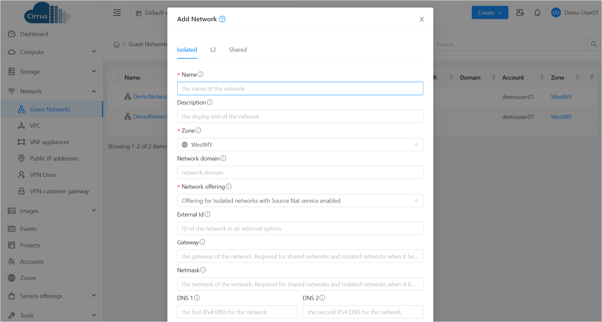

Basic Networking¶
Cirrus allows users to set up networking for cloud resources.
About Virtual Network¶
A virtual network is a logical construct that enables multi-tenancy on a single physical network.
Isolated Networks¶
An isolated network can be accessed only by Instances of a single account.
Adding an Isolated Network¶
To add an Isolated Network:
In the left navigation, choose Network.
In the Select view, select Guest Networks.
Click Add Network. The Add Network window is displayed:
Provide the following information for creating an isolated Network:
Name: Enter a name for the network.
Description: Enter a description for the network.
Zone: Select the zone for the network.
Network offering: Select the network offering for the network.
Gateway: Enter the gateway for the network.
Netmask: Enter the netmask for the network.
DNS: Enter the DNS for the network.
Click OK.
Editing, Restarting, and Removing a Isolated Network¶
To edit, restart, or remove an Isolated Network:
In the left navigation, choose Network.
In the Select view, select Guest Networks. All the guest Networks that you have created for the account are listed in the page.
Select the guest Network you want to work with.
In the Details tab, click the “Delete Network” button to deletle the guest Network. Please note that all the resources in this Network will be deleted. You can edit the name, description, Network offering, CIDR, Network domain, DNS of a guest Network. To do that, click the “Edit” button. To restart a guest Network, click the “Restart Network” button. Please note all services provided by this Network will be interrupted. When you enable “Clean up”, the virtual routers of guest Network will be destroyed and new virtual routers will be provisioned.
Note
Ensure that all the Instances are removed before you remove a guest Network.
Reconfiguring Networks in instances¶
Cirrus provides you the ability to move instances between networks and reconfigure an instance’s network. You can remove an instance from a network and add to a new network. You can also change the default network of a virtual machine.
Adding a Network¶
In the left navigation, click Instances.
Choose the instance that you want to work with.
Click the NICs tab.
Click Add network to instance. The Add network to instance dialog is displayed.
In the drop-down list, select the network that you would like to add this instance to. A new NIC is added for this network. You can view the following details in the NICs page:
ID
Network Name
Type
IP Address
Gateway
Netmask
Is default
Removing a Network¶
In the left navigation, click Instances.
Choose the instance that you want to work with.
Click the NICs tab.
Locate the NIC you want to remove.
Click Remove NIC button. button to remove a NIC.
Click Yes to confirm.
Selecting the Default Network¶
In the left navigation, click Instances.
Choose the instance that you want to work with.
Click the NICs tab.
Locate the NIC you want to work with.
Click the Set default NIC button. button to set a NIC as default one..
Click Yes to confirm.
Public IP Address¶
Acquiring a New IP Address¶
In the left navigation, choose Network.
Click the name of the network where you want to work with.
Click the Public IP Addresses tab.
Click Acquire New IP. The Acquire New IP window is displayed. Within a few moments, the new IP address should appear with the state Allocated. You can now use the IP address in port forwarding or static NAT rules.
Releasing an IP Address¶
When the last rule for an IP address is removed, you can release that IP address. The IP address still belongs to the VPC; however, it can be picked up for any guest network again.
In the left navigation, choose Network.
Click the name of the network where you want to work with.
Click Public IP Addresses.
Click the IP address you want to release.
Click the Release IP button. button to release an IP
Reserving a Public IP Address¶
When a public IP address is Free, you can reserve the public IP address. The public IP address can be reserved to the caller or other accounts.
In the left navigation, choose Network.
Click Public IP Addresses. By default, it displays the Public IP Addresses in Allocate state.
Filter the Public IP Addresses by state ‘Free’
Click the Public IP address you want to reserve.
Click the Reserve IP button. The Reserve Public IP dialog is displayed.
In the drop-down list, select the Account Type (Account or Project) that you would like to reserve this Public IP to.
Click Submit button. Reserved Public IP Addresses can be acquired and used in isolated Networks or VPCs of the accounts which the Public IP Addresses are reserved to. Reserved Public IP Addresses will be considered as an used Public IP of the account and domain.
Releasing a Reserved Public IP Address¶
When a public IP address is Reserved, you can release the public IP address so that the public IP address is ready for use by other accounts.
In the left navigation, choose Network.
Click Public IP Addresses. By default, it displays the Public IP Addresses in Allocate state.
Filter the Public IP Addresses by state ‘Reserved’
Click the Public IP address you want to release.
Click the Release IP button.
Click OK button.
Static NAT¶
A static NAT rule maps a public IP address to the private IP address of an instance in order to allow Internet traffic into the instance. The public IP address always remains the same, which is why it is called static NAT. This section tells how to enable or disable static NAT for a particular IP address.
In the left navigation, choose Network.
Click the name of the network where you want to work with.
Click Public IP Addresses.
Click the IP address you want to work with.
Click the Static NAT button to enable/disable NAT button. The button toggles between Enable and Disable, depending on whether static NAT is currently enabled for the IP address.
If you are enabling static NAT, a dialog appears where you can choose the destination instance and click Apply.
Note
If port forwarding rules are already in effect for an IP address, you cannot enable static NAT to that IP.
If a Guest Instance is part of more than one network, static NAT rules will function only if they are defined on the default network.
IP Forwarding and Firewalling¶
By default, all incoming traffic to the public IP address is rejected. All outgoing traffic from the guests is also blocked by default.
To allow outgoing traffic, follow the procedure in Egress Firewall Rules in an Advanced Zone.
To allow incoming traffic, users may set up firewall rules and/or port forwarding rules. For example, you can use a firewall rule to open a range of ports on the public IP address, such as 33 through 44. Then use port forwarding rules to direct traffic from individual ports within that range to specific ports on user instances. For example, one port forwarding rule could route incoming traffic on the public IP’s port 33 to port 100 on one user instance’s private IP.
Firewall Rules¶
By default, all incoming traffic to the public IP address is rejected by the firewall. To allow external traffic, you can open firewall ports by specifying firewall rules. You can optionally specify one or more CIDRs to filter the source IPs. This is useful when you want to allow only incoming requests from certain IP addresses.
You cannot use firewall rules to open ports for an elastic IP address. When elastic IP is used, outside access is instead controlled through the use of security groups. See “Adding a Security Group”.
In an advanced zone, you can also create egress firewall rules by using the virtual router. For more information, see “Egress Firewall Rules in an Advanced Zone”.
Firewall rules can be created using the Firewall tab in the Management Server UI. This tab is not displayed by default when Cirrus is installed. To display the Firewall tab, the Cirrus administrator must set the global configuration parameter firewall.rule.ui.enabled to “true.”
To create a firewall rule:
Log in to the Cirrus UI as an administrator or end user.
In the left navigation, choose Network.
Click the name of the network where you want to work with.
Click Public IP Addresses tab.
Click the IP address you want to work with.
Click the Firewall tab and fill in the following values.
Source CIDR: (Optional) To accept only traffic from IP addresses within a particular address block, enter a CIDR or a comma-separated list of CIDRs. Example: 192.168.0.0/22. Leave empty to allow all CIDRs.
Protocol: The communication protocol in use on the opened port(s).
Start Port and End Port: The port(s) you want to open on the firewall. If you are opening a single port, use the same number in both fields.
ICMP Type and ICMP Code: Used only if Protocol is set to ICMP. Provide the type and code required by the ICMP protocol to fill out the ICMP header. Refer to ICMP documentation for more details if you are not sure what to enter
Click Add.
Egress Firewall Rules in an Advanced Zone¶
The egress traffic originates from a private network to a public network, such as the Internet. By default, the egress traffic is blocked in default network offerings, so no outgoing traffic is allowed from a guest network to the Internet. However, you can control the egress traffic in an Advanced zone by creating egress firewall rules. When an egress firewall rule is applied, the traffic specific to the rule is allowed and the remaining traffic is blocked. When all the firewall rules are removed the default policy, Block, is applied.
Prerequisites and Guidelines¶
Consider the following scenarios to apply egress firewall rules:
The egress firewall rules are not supported on shared networks.
Allow the egress traffic from specified source CIDR. The Source CIDR is part of guest network CIDR.
Allow the egress traffic with protocol TCP,UDP,ICMP, or ALL.
Allow the egress traffic with protocol and destination port range. The port range is specified for TCP, UDP or for ICMP type and code.
The default policy is Allow for the new network offerings, whereas on upgrade existing network offerings with firewall service providers will have the default egress policy Deny.
Configuring an Egress Firewall Rule¶
In the left navigation, choose Network.
In Select view, choose Guest networks, then click the Guest network you want.
To add an egress rule, click the Egress rules tab and fill out the following fields to specify what type of traffic is allowed to be sent out of instances in this guest network:
CIDR: (Add by CIDR only) To send traffic only to the IP addresses within a particular address block, enter a CIDR or a comma-separated list of CIDRs. The CIDR is the base IP address of the destination. For example, 192.168.0.0/22. To allow all CIDRs, set to 0.0.0.0/0.
Protocol: The networking protocol that instances uses to send outgoing traffic. The TCP and UDP protocols are typically used for data exchange and end-user communications. The ICMP protocol is typically used to send error messages or network monitoring data.
Start Port, End Port: (TCP, UDP only) A range of listening ports that are the destination for the outgoing traffic. If you are opening a single port, use the same number in both fields.
ICMP Type, ICMP Code: (ICMP only) The type of message and error code that are sent.
Click Add.
Port Forwarding¶
A port forward service is a set of port forwarding rules that define a policy. A port forward service is then applied to one or more Guest Instances. The Guest Instance then has its inbound network access managed according to the policy defined by the port forwarding service. You can optionally specify one or more CIDRs to filter the source IPs. This is useful when you want to allow only incoming requests from certain IP addresses to be forwarded.
A Guest Instance can be in any number of port forward services. Port forward services can be defined but have no members. If a Guest Instance is part of more than one network, port forwarding rules will function only if they are defined on the default network
To set up port forwarding:
In the left navigation bar, click Network.
Click the name of the guest network where the instances are running.
Choose an existing IP address or acquire a new IP address. See “Acquiring a New IP Address”. Click the name of the IP address in the list.
Click the Port Forwarding tab.
Fill in the following:
Public Port: The port to which public traffic will be addressed on the IP address you acquired in the previous step.
Private Port: The port on which the instance is listening for forwarded public traffic.
Protocol: The communication protocol in use between the two ports
Click Add.
IP Load Balancing¶
The user may choose to associate the same public IP for multiple guests. Cirrus implements a TCP-level load balancer with the following policies.
Round-robin
Least connection
Source IP
This is similar to port forwarding but the destination may be multiple IP addresses.